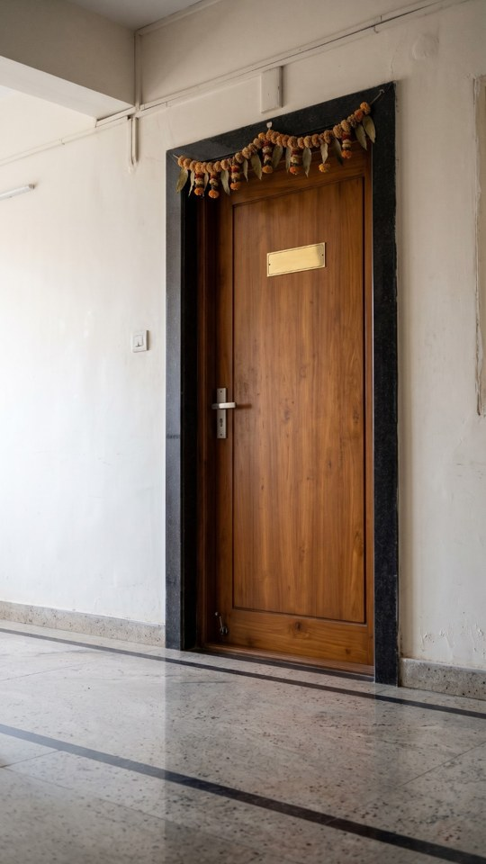

हा flat आधीच विकलाय?
2 मिनिटांत · ₹0 · घरबसल्या
दुसऱ्याचं नाव!
2 वर्षांपूर्वी
S1 · Hook 0–7.5 s
"राहुलने वाशीत flat ठरवला… दुसऱ्याचं नाव होतं! … कसं? Index II!"Frame 1 (voice आधी): "हा flat आधीच विकलाय?" मोठे · P1 दरवाजा, push-in · राहुल (धक्का) "दुसऱ्याचं" वर pop + shake · "दुसऱ्याचं नाव!" stamp · "Index II" वर title pill